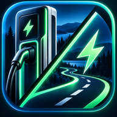

EV Route Chargers
Seuraava latauspysähdys
Akkua (km)
Vara (km)
Hakusäde (km)
Etsi seuraava lataus
Yritä uudelleen
Päivitä “kovaa”
Debug
Operaattorit
Suosikit / Kaikki / omat valinnat
ABC
K-Lataus
Neste
ST1
Faast
Suosikit
Kaikki
Reittikartta
Zoomaa ja siirrä karttaa
Näytä koko reitti
Näytä latausalue
Näytä viimeisin onnistunut tulos
Tyhjennä viimeisin tulos